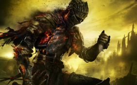
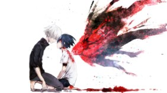
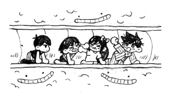
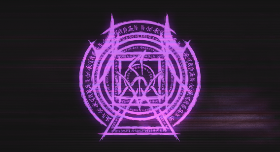

Lista de imagens que eu acho pica
Primeira imagem da lista 👍
segunda imagem pica 👌
terceira umagem pica 😟
Quarta imagen 👩👩👧👦
Quinta imagem
AgoraTUDO MUDA!!!
Lista de pessoas do chat
como funciona ? quando eu jogar um jogo é nesse jogo tiver roleta é cair
colocar nome/imagem da pessoa escolhida do chat para estar no meu site
uma pessoa vai ser escolhida aleatoriamente por mim e terá seu nome colocado no site
conforme meu avanço na programação cada nome vai ser diferente conforme minha
evolução nesta área tento mais Frufruzinho
Se quiser entrar nessa coisa de Maluquinhos voce podera acessar minhas redes
youtube onde podera encontrar videos meus da live
twitch onde faço lives todos os dias de segunta a Quinta
Previa de video
para aceesar o meu tik tok aveançe para outra página clicando aqui
O que a pessoas do chat escolhida precisa fazer ?
- mandar para mim o nome que deseja ter para eu colocar.
- uma imagem a escolha para eu colocar embaixo de seu nome.
- uma mensagem "secreta"... que estara escondida em seu nome.
-
se quiser posso colocar algums emojis... personalizar do
jeito que a senhoria quiser com alguns limites é claro - Vou colocando mais coisas conforme meu avanço
O que não pode ter ?
- A imagem colocada não pode ter nada TAM TAM
-
O secredo que estara em seu nome tem que ser algo que possa ser
mostrado pra todos, nada que seja profundo... - Não pode ter nada relacionada a pornografia em tudo que
vc quiser colocar
A primeira pessoa que foi escolhida
para o mural do chat foi 🐒S_jordann🕴